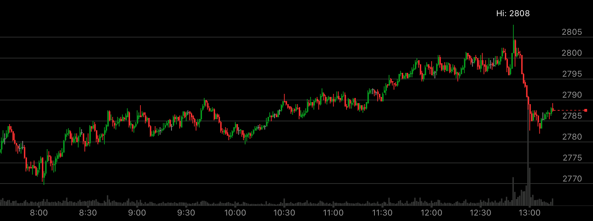

连续的没有回调的相对弱势
- 一个相对弱势，即使很小，也应该要大幅回调，这样才可以继续前进。这个走势当中，它连续出现几个相对弱势。
没有回调。然后出现了一个相对强势，一举回调前面所有没有回调的相对弱势。

图示:10:30新高后，立刻拉回，11点新高，走平。形成相对弱势。但是没有大幅回调。
继续前进，11：40新高，立刻拉回，12：00新高，立刻拉回。12：20新高，走平。相对弱势。它在12：50创新高后，立刻一口气全部拉回，
把所有的没有调整都调整了。而12：50的新高，表明，它未来会超过这个点。